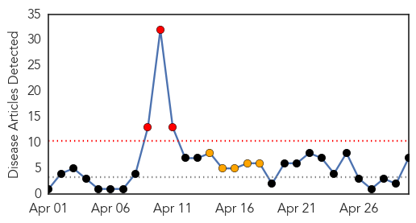

Influenza
30-Day Web Trend
3 alerts, 5 warnings

30-Day Twitter Trend
4 alerts, 0 warnings

Article Locations

Article Confidences

Top Articles:
- 0.999
- Upsurge in MERS Corona Virus Due to Warmer Weather
- 0.999
- WHO: Upsurge in MERS Corona Virus Due to Warmer Weather
- 0.986
- Rare feat for Bangladesh expert
- 0.962
- bioCSL supports public health efforts in Laos with donation of more than 700,000 doses of seasonal influenza vaccine
- 0.958
- Flu spreading at rapid rate in South Australia
- 0.939
- Influenza, Strep were present in two who died in Pulaski Co. last week
- 0.648
- WHO’s first global report on antibiotic resistance reveals serious, worldwide threat to public health
Top Tweets:
-
No tweets found for Apr 30, 2014
West Nile Virus
30-Day Web Trend
8 alerts, 0 warnings
30-Day Twitter Trend
0 alerts, 0 warnings

Article Locations

Article Confidences

Top Articles:
-
No articles found for Apr 30, 2014
Top Tweets:
-
No tweets found for Apr 30, 2014